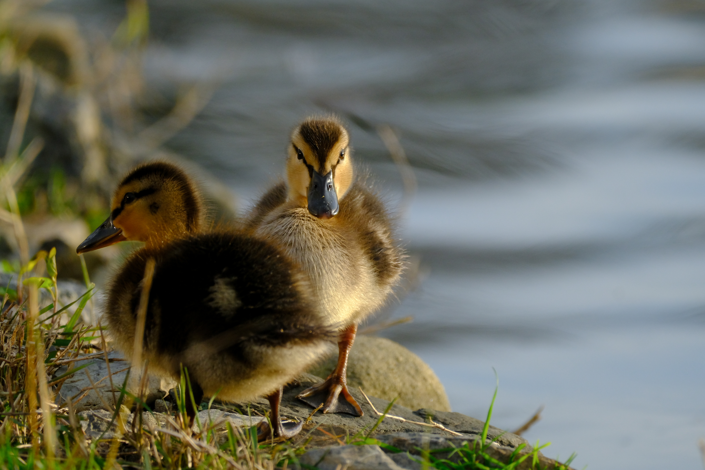
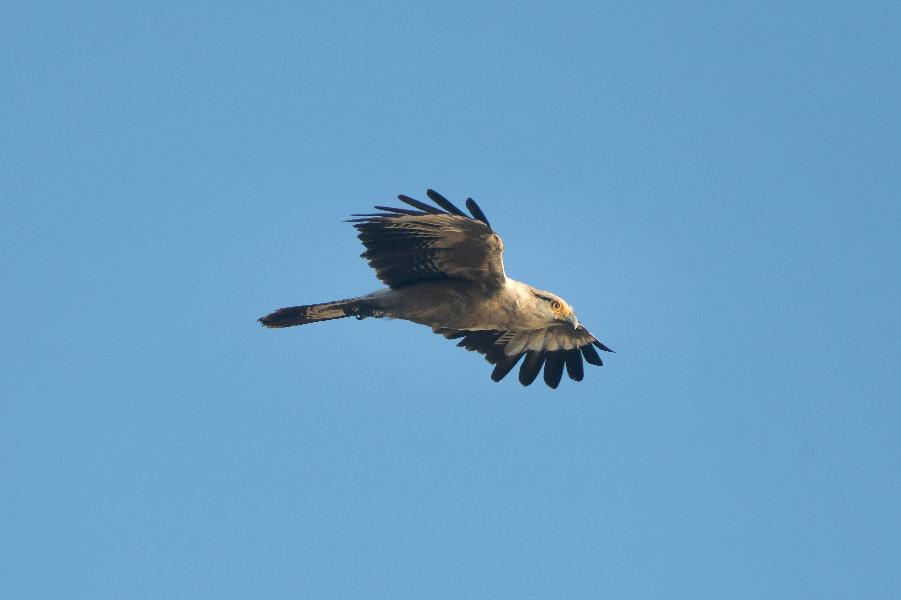
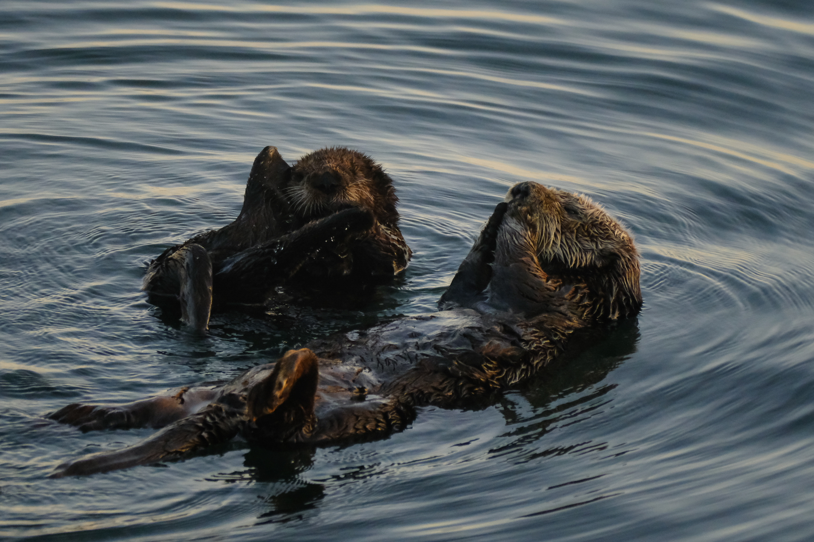
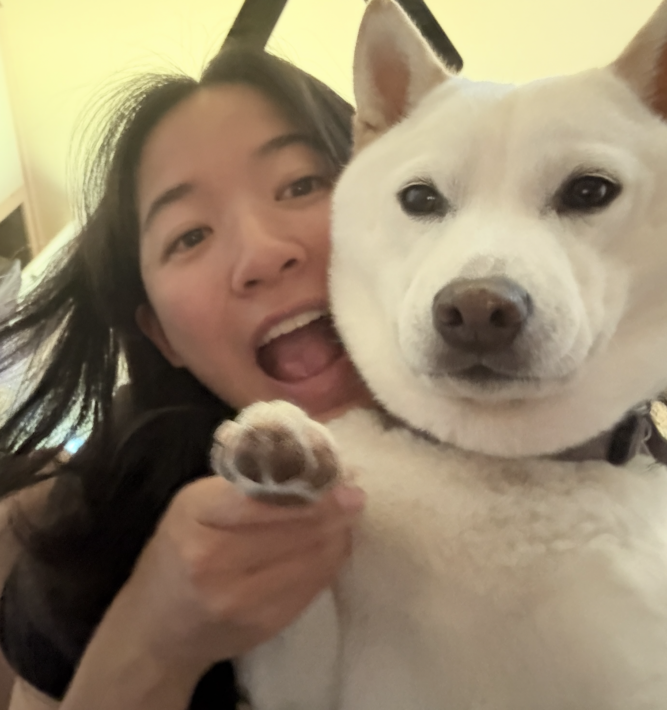
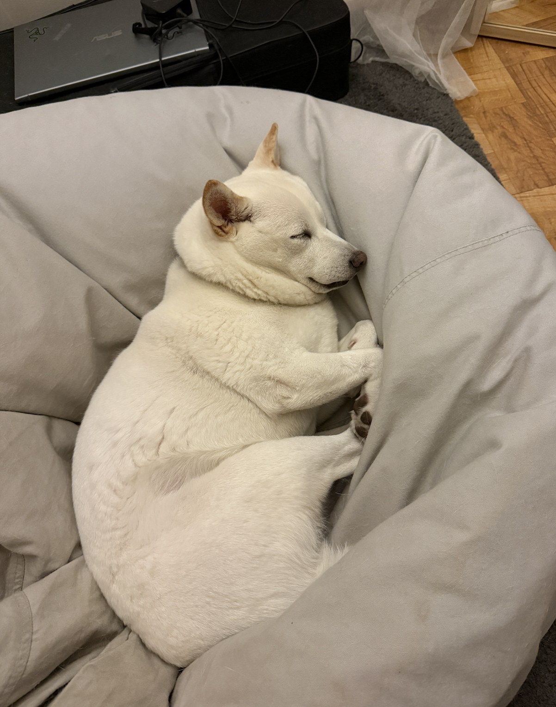

<div class="textcontainer">
<h3>All About Jolee Kuo 𓅰 𓅬 𓅭 𓅮 𓅯</h3>
<p class="margin"> </p>
<div class="center-row">
<img src="./me.png" alt="Image of Jolee Kuo" style ="width:270px; margin-bottom: 20px;">
<p id="aboutme">
Hi! My name is Jolee Kuo, and I am a freshman at Harvard. I am from Arcadia, CA (SoCal for the win!!!) and am hoping to concentrate in Integrative Biology. On campus, I am the co-president of Harvard Undergraduate Birding Club, aka HarBird! And I am a Harvard Outing Club trainee too yipee. I hope you join us on a HarBird or HOC trip sometime ദ്ദി ≽^⎚˕⎚^≼ .ᐟ
<br><br>
<— Me holding an Orange-crowned Warbler! I volunteer at a bird banding station.
<br></br>
I love all wildlife, but birds especially (if you couldn't tell already lol). I am going to pursue conservation biology work in the future so that I can save the marvelous creatures of planet Earth! Here's some of my wildlife photography, and don't forget to follow @joleebirds on Instagram for more:
</p>
</div>
<p id="wildlife">



</p>
<p>
I also have a super epic dog. Her name is Lacey. She is the cutest baby gorl ever :3
</p>


</div>
<!--<br></br>
Maybe even add a video?
<br></br>
<video width="640" height="480" controls>
<source src="temp-video.mp4" type="video/mp4">
</video>
-->
</div>